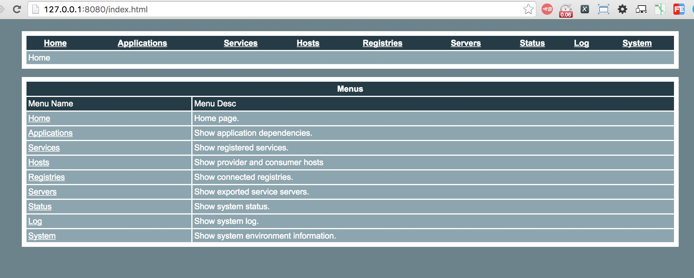
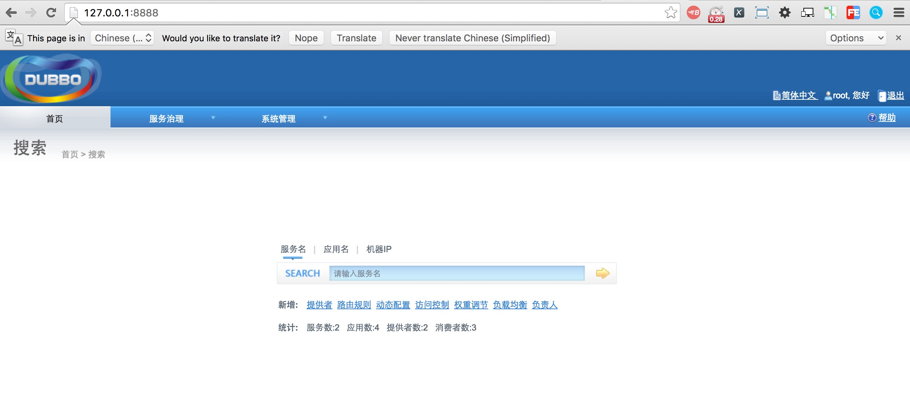
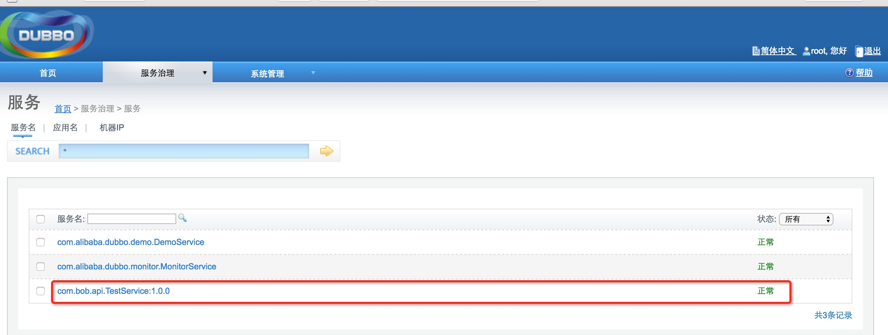
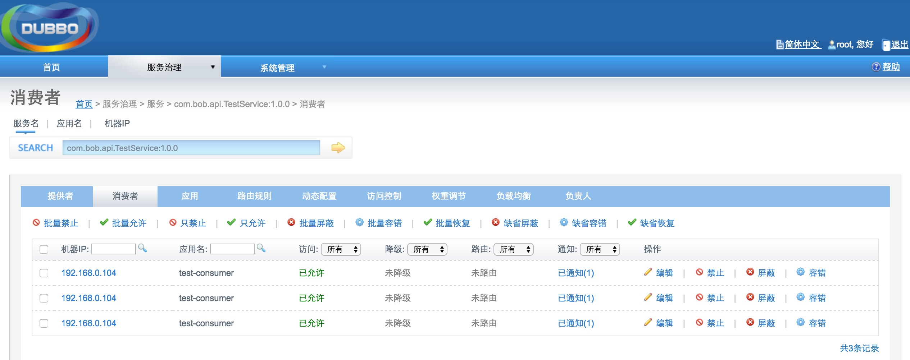

| 名称 | 版本 |
|---|---|
| OS | Mac OS X 10.11.5 |
| JDK | 1.8.0_51 |
| dubbo | 2.5.4 |
| tomcat | 8.0.35 |
| Zookeeper | 3.4.8 |
| maven | 3.3.9 |
想用wget进行下载，发现mac默认是没有安装的。用惯了别的Linux环境，相使用个自动安装工具来安装wget。让后就找到了Homebrew。下面首先安装Homebrew，这个类似CentOS的yum和Ubuntu的apt-get，安装方法很简单，执行下面就可以了：
ruby -e “$(curl -fsSL https://raw.githubusercontent.com/Homebrew/install/master/install)”
执行上面并安装成功后，下面让我们测试下安装wget：
brew install wget
完美，安装完毕。
根据网站官方教程:
http://dubbo.io/Administrator+Guide-zh.htm#AdministratorGuide-zh-%E7%A4%BA%E4%BE%8B%E6%8F%90%E4%BE%9B%E8%80%85%E5%AE%89%E8%A3%85
发现直接下载assembly的地址已经无效了，到其他地址下吧。发现在github中有demo代码，fork到自己账户下，克隆到本地。这个是用maven管理的，所以还要准备好maven环境，关于maven环境的搭建此处省略。
cd dubbo
mvn install -Dmaven.test.skip=true
编译完成后，进入到demo到目录下将制作好的组件找个地方放置。压缩包名字为：
目录dubbo/dubbo-demo/dubbo-demo-provider/target下面：
dubbo-demo-provider-2.5.4-SNAPSHOT-assembly.tar.gz
目录dubbo/dubbo-demo/dubbo-demo-consumer/target下面：
dubbo-demo-consumer-2.5.4-SNAPSHOT-assembly.tar.gz
目录dubbo/dubbo-simple/dubbo-monitor-simple/target下面：
dubbo-monitor-simple-2.5.4-SNAPSHOT-assembly.tar.gz
目录dubbo/dubbo-admin/target下面：
dubbo-admin-2.5.4-SNAPSHOT.war
注册中心有多种选择，我选择zookeeper作为注册中心。
wget http://apache.fayea.com/zookeeper/zookeeper-3.4.8/zookeeper-3.4.8.tar.gz
tar -zxvf zookeeper-3.4.8.tar.gz
cd zookeeper-3.4.8
cp conf/zoo_sample.cfg conf/zoo.cfg
不配置集群，直接启动
./bin/zkServer.sh start
tar -zxvf dubbo-demo-provider-2.5.4-SNAPSHOT-assembly.tar.gz
cd dubbo-demo-provider-2.5.4-SNAPSHOT
配置
vi conf/dubbo.properties
将其中
dubbo.registry.address=zookeeper://127.0.0.1:2181
去掉注释，注释multicast那个
启动
./bin/start.sh
连接到provider
telnet 127.0.0.1 20880
输入help，查看提供的操作
tar -zxvf dubbo-demo-consumer-2.5.4-SNAPSHOT-assembly.tar.gz
cd dubbo-demo-consumer-2.5.4-SNAPSHOT
配置
vi conf/dubbo.properties
将其中
dubbo.registry.address=zookeeper://127.0.0.1:2181
去掉注释，注释multicast那个
./bin/start.sh
tar -zxvf dubbo-monitor-simple-2.5.4-SNAPSHOT-assembly.tar.gz
cd dubbo-monitor-simple-2.5.4-SNAPSHOT
配置
vi conf/dubbo.properties
将其中
dubbo.registry.address=zookeeper://127.0.0.1:2181
去掉注释，注释multicast那个
./bin/start.sh
http://127.0.0.1:8080

将编译好的dubbo-admin-2.5.4-SNAPSHOT.war拷贝到tomcat下面。配置server.xml，避免和前面监控中心的端口产生冲突。启动tomcat。
发现报错：
Bean property ‘URIType’ is not writable or has an invalid setter method.
具体错误及解决方案参考这里：
https://github.com/alibaba/dubbo/issues/50
按照以下4步操作报错就消失了
1、webx的依赖改为3.1.6版；
<dependency>
<groupId>com.alibaba.citrus</groupId>
<artifactId>citrus-webx-all</artifactId>
<version>3.1.6</version>
</dependency>
2、添加velocity的依赖，我用了1.7；
<dependency>
<groupId>org.apache.velocity</groupId>
<artifactId>velocity</artifactId>
<version>1.7</version>
</dependency>
3、对依赖项dubbo添加exclusion，避免引入旧spring
<dependency>
<groupId>com.alibaba</groupId>
<artifactId>dubbo</artifactId>
<version>${project.parent.version}</version>
<exclusions>
<exclusion>
<groupId>org.springframework</groupId>
<artifactId>spring</artifactId>
</exclusion>
</exclusions>
</dependency>
4、webx已有spring 3以上的依赖，因此注释掉dubbo-admin里面的spring依赖
<!--<dependency>-->
<!--<groupId>org.springframework</groupId>-->
<!--<artifactId>spring</artifactId>-->
<!--</dependency>-->
确定war包解压后lib目录没有spring 3 以下的依赖就行。然后运行正常了。
这里不需要额外配置，dubbo.properties中默认就是zookeeper的配置。
我的访问地址是：
http://127.0.0.1:8888

dubbo与SpringMVC的集成，我参考了这段：
http://dubbo.io/User+Guide-zh.htm#UserGuide-zh-%E6%B3%A8%E8%A7%A3%E9%85%8D%E7%BD%AE
新建两个工程：
| dubbo application |
|---|
| test-consumer |
| test-provider |
上两张张加入后管理控制台的截图，后面那张消费者为什么有三个表示不理解，需要继续研究：


在搭建的过程中遇到了两个问题：
将dubbo.xsd下载到本地后，通过以下步骤操作加入，我用的是eclipse：
windows->preferrence->xml->xmlcatalog
add->catalog entry ->file system 选择刚刚下载的文件路 径
修改key值和配置文件的http://code.alibabatech.com/schema/dubbo/dubbo.xsd 相同
问题的解决方案出处在这里，感谢作者～
http://blog.csdn.net/lxb15959168136/article/details/50225057
我的做法：
由于我是用的maven构建，所以在工程pom.xml中直接加入以下:
<dependency>
<groupId>org.javassist</groupId>
<artifactId>javassist</artifactId>
<version>3.18.2-GA</version>
<scope>runtime</scope>
</dependency>https://github.com/mingbozhang/leandubbo